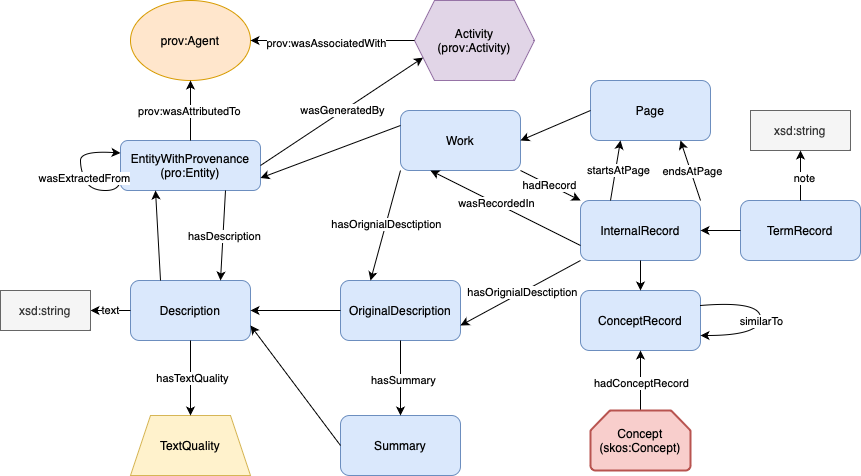
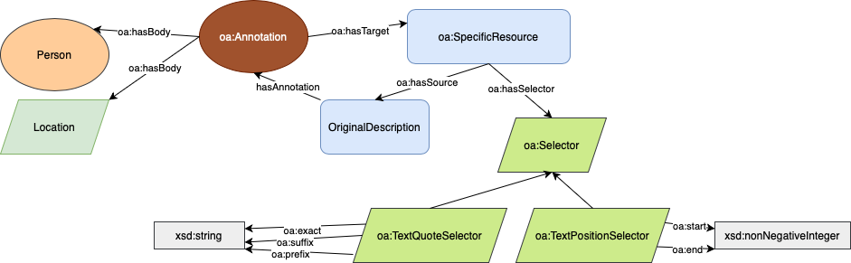
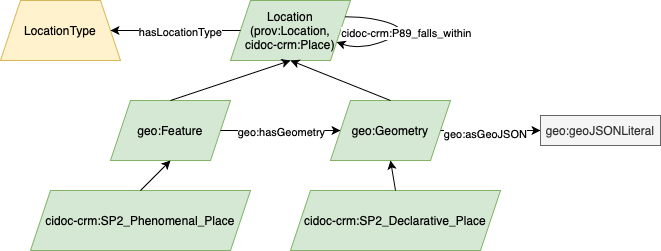
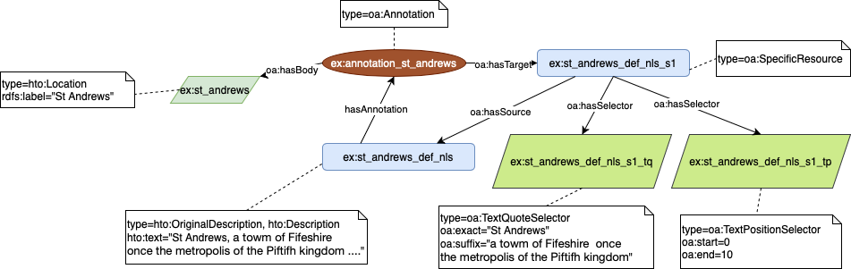

Abstract
We present MappingChange, a resource that constructs a temporal and semantic knowledge base from ten 19th-century Gazetteers of Scotland (1803–1901), digitized as over 13,000 page-level ALTO XML files. These texts are noisy, inconsistently structured, and lack article-level markup—posing substantial challenges for reuse. To segment and extract over 50,000 historical place descriptions, we employ large language models (LLMs) with edition-specific prompt strategies, tuned to handle diverse editorial conventions, abbreviations, recurring place names, and multi-page entries. The resulting knowledge base comprises three interlinked knowledge graphs: (1) a basic KG, representing extracted article-level entries and their metadata; (2) a concept-enriched KG, clustering semantically related descriptions across editions using sentence embeddings, with links to Wikidata and DBpedia; and (3) a location-annotated KG, enriched through named entity recognition and georesolution. All graphs are expressed in RDF and modeled using the extended Heritage Textual Ontology (HTO), which captures textual provenance, extraction context, and diachronic alignment. In addition to the knowledge graphs, we release (a) edition-specific and aggregated DataFrames (one row per place entry, including metadata and embeddings), and (b) a set of Jupyter Notebooks illustrating usage of our resource. All components are openly available and deployed through the Frances semantic platform and a public Fuseki endpoint, enabling historical exploration via semantic search, timeline comparison, and visual querying interfaces.
Introduction
Descriptive gazetteers were a cornerstone of how 19th-century Scotland recorded and transmitted its geographical knowledge—capturing towns, parishes, rivers, castles, and natural features within evolving historical, social, and economic narratives. As industrialization, migration, land reform, and empire reshaped the country, these texts became critical instruments for documenting change. The Gazetteers of Scotland, 1803–1901, digitized by the National Library of Scotland (NLS), form one of the most extensive corpora for studying this spatial transformation. Yet despite being released as more than 13,000 OCR-aligned ALTO XML files, the collection remains largely unsuitable for structured analysis. The lack of article-level markup, noisy layouts, and inconsistent editorial conventions limit its accessibility for digital scholarship.
Each edition introduces distinct typographic conventions for article headers, redirects, abbreviations, and multi-page entries. In early volumes, place names appear in uppercase with minimal punctuation to separate entries (Figure 1, left), whereas later editions use clearer formatting, including title casing and consistent delimiters (Figure 1, right). These variations complicate traditional rule-based approaches to text segmentation and alignment, making it difficult to trace how a place is described across time or to resolve recurring names that refer to different locations.
Compounding these challenges is the fact that many place names (e.g. “ABBEY”) recur across the gazetteers, often referring to different locations. Moreover, later editions tend to include a broader set of places, meaning some names appear for the first time in later volumes or gain more detailed descriptions over time. Disambiguating such entries is non-trivial, as it depends on contextual clues within each article rather than surface-level patterns. Our approach relies on LLM-based article segmentation and interpretation—capturing subtle editorial cues and semantic context to associate each name with the appropriate description.
To overcome these limitations, we present MappingChange, a reusable and openly licensed resource that transforms this historically rich but structurally fragmented corpus into a structured and semantically enriched knowledge base. Our pipeline uses large language models (LLMs) with edition-specific prompt strategies to extract over 50,000 article-level entries and express them in RDF as three interlinked knowledge graphs, modeled using the Heritage Textual Ontology (HTO). The resulting knowledge base supports both temporal analysis, enabling comparison of how place descriptions change across editions, and semantic exploration, through the linking of conceptually related entries and connections to Wikidata and DBpedia.
A full account of the dataset structure, file formats, and access methods is provided in Section 3. All resources (DataFrames, knowledge graphs, and Notebooks) are publicly archived and distributed via our repository, with persistent identifiers issued via Zenodo and integrated into the Frances semantic web platform for visual exploration.
Figure 1 (left): Opening entries of the 1803 Gazetteer of Scotland. Page headers consist of two three-letter uppercase segments (e.g., “ABB ABE”). Place names appear in all caps, typically followed by a period or semicolon—offering minimal typographic separation between entries.

Figure 1 (right): Opening entries of the 1884 Ordnance Gazetteer of Scotland. This edition features a clearer visual structure, with entries formatted in title case and followed by commas. Page headers display the first and last place names on the page, both rendered in uppercase.
All resources presented in tis work are reproducible from source using openly available scripts, which are detailed in Section 5. This enables other researchers to reuse, adapt, or extend the MappingChange infrastructure for new corpora, ensuring FAIR data practices and long-term sustainability. In doing so, the project facilitates new forms of historical geography and cultural analytics by making a corpus computationally interoperable, queryable, and reusable across domains. / The remainder of this paper is structured as follows. Section 2 reviews related work on Semantic Web methods for cultural heritage, including digitization, ontology design, and the use of large language model. Section 3 provides a detailed description of the MappingChange resource. Section 4 details the Heritage Textual Ontology. Section 5 outlines the end-to-end pipeline for extraction, cleaning, and semantic enrichment. Section 6 presents usage scenarios and queries that demonstrate how the resource supports historical research. Finally, Section 7 concludes with a summary of contributions and future directions.
Resource Description
The MappingChange resource provides a reusable, modular knowledge base that transforms the digitized Gazetteers of Scotland (1803–1901) into a structured and semantically enriched dataset for historical place-based analysis. Central to the resource are volume-specific JSON DataFrames containing over 50,000 articles—each corresponding to a place entry—extracted from OCR-aligned ALTO XML using edition-specific GPT-4 prompts. These DataFrames include article text, identified place names, and structured metadata such as edition, volume, page number, and word count. Each DataFrame is normalized to a one-entry-per-row format, making it suitable for downstream integration and statistical analysis. We provide both individual DataFrames for each of the ten editions and a unified, cross-edition DataFrame that aggregates all entries into a single structure.
These DataFrames serve as the foundation for constructing three interlinked RDF knowledge graphs, modeled using the Heritage Textual Ontology (HTO), which captures both textual provenance and semantic transformations. The first knowledge graph encodes cleaned article-level records and their bibliographic context, preserving references to their original digitized pages. The second graph includes pre-computed sentence embeddings for each article and introduces concept-level alignment by clustering semantically equivalent entries across editions, assigning persistent identifiers and linking them to external entities such as Wikidata and DBpedia. The third graph adds geographic enrichment, using named entity recognition and georesolution techniques to annotate articles with location coordinates and spatial types. Together, these layers enable advanced temporal and semantic analysis of how places were described over time in the Scottish Gazetteers.
All knowledge graphs are serialized in RDF/Turtle and adhere to FAIR data principles. Outputs are hosted in a public Fuseki SPARQL endpoint, and are complemented by a curated set of Jupyter notebooks. These include SPARQL query examples and data exploration analyses. The three interlinked knowledge graphs are deployed within the Frances semantic platform, providing users with interactive interfaces for querying, timeline visualization, and concept exploration.
The full resource (including individual and aggregated DataFrames, knowledge graphs, and exploratory notebooks) is openly available at MappingChange repository, with persistent identifiers to be issued via Zenodo. To promote reuse and reproducibility, the repository includes modular scripts and comprehensive documentation. The step-by-step process by which the data and knowledge graphs are constructed—including article extraction, enrichment, and RDF serialization—is described in Section 5.
Heritage Textual Ontology (HTO)
The HTO provides the semantic backbone for MappingChange, enabling the structured representation of historical textual records, their provenance, and the evolving concepts they describe. Developed to support real-world use cases in digital heritage, HTO models not only entities and attributes, but also the editorial and computational processes by which historical texts are extracted, digitized, interpreted, and semantically enriched. Unlike more generic vocabularies, HTO is tailored to the challenges of heritage corpora—such as OCR noise, editorial variation, and evolving terminology—offering fine-grained support for provenance, textual quality, named entity recognition, and diachronic conceptual alignment.
HTO is openly developed, and it builds on established ontologies such as PROV-O, SKOS, Schema.org, and CIDOC CRM, while introducing domain-specific classes and properties designed for flexible reuse and extension. Since its initial release, HTO has been extended to support geospatial annotation, richer NER-based enrichment, and explicit modeling of language-model-based transformations, making it suitable for a wider range of digitized corpora.
HTO is modular and extensible, and can be adopted in other projects that require modeling of OCR-derived documents, provenance-aware digitization pipelines, or diachronic semantic alignment. It also plays a central role in enabling FAIR knowledge graph construction with transparent lineage tracking.
Modeling Bibliographic Structure and Provenance
HTO provides a structured vocabulary for modeling the archival hierarchy of heritage texts (including works, editions, series, and pages) through the class hto:Work and its subclasses. Each textual entity is also a prov:Entity (hto:EntityWithProvenance), enabling provenance tracking for digitization methods (e.g., OCR or manual transcription), quality levels (hto:TextQuality), and attribution to specific software or human agents (prov:Agent). Works can be grouped into collections using hto:Collection and linked to their physical or digital source editions. Figure 2 illustrates this bibliographic modeling layer.

Figure 2: Bibliographic and provenance modeling in HTO, including core classes (blue), agents (orange), locations (green), and datatype properties (grey).
Capturing Textual Records and Interpretations
HTO distinguishes between original descriptions (hto:OriginalDescription) and derived or enriched interpretations (hto:Description). These are associated with their source pages via hto:Page and hto:hasOriginalDescription, and annotated with quality levels (e.g., “Low”, “Moderate”, or “High”) based on their provenance. This allows the knowledge base to retain multiple text variants and trace how they were extracted and transformed.
Records within the text are modeled using hto:InternalRecord (for local entities) and hto:ExternalRecord (for linked data resources such as Wikidata or DBpedia). Repeated terms (like “St Andrews”) are tracked across editions via hto:TermRecord, while hto:ConceptRecord groups semantically similar entries into shared hto:Concepts, enabling diachronic alignment. Figure 3 shows how textual terms and their semantic clusters are represented.

Figure 3: Modeling of term records and concept clusters using HTO classes for internal and external alignment.
Geospatial Annotations and Place Modeling
In MappingChange, HTO has been extended to support spatial annotation and georesolution (See Figure 4). Locations are represented as hto:Location and typed using subclasses such as hto:Town, hto:Region, or hto:River. Each place may include spatial geometries using geo:hasGeometry or geo:asGeoJSON, with optional declarations using cidoc-crm:SP2_Declarative_Place. This enables spatial reasoning, integration with GeoSPARQL, and alignment with modern gazetteers and linked data services. or an overview of spatial modeling in HTO.

Figure 4: Representation of locations and spatial types in HTO, including georesolved coordinates and place categorization.
Annotation and Segment Selection
To link extracted place names or descriptions to their textual anchors, HTO adopts Web Annotation (OA) standards. Each annotation (oa:Annotation) includes a source document, a target entity, and selectors (e.g., oa:TextQuoteSelector, oa:TextPositionSelector) that specify the exact span of text involved. This ensures fine-grained traceability back to OCR-aligned sources and supports downstream validation and curation. An example is shown in Figure 5.

Figure 5: Example of how text segments are annotated and anchored using OA selectors in HTO.
Construction and Content
The MappingChange knowledge base is built through a multi-stage pipeline that transforms unstructured OCR-aligned ALTO XML files into structured DataFrames and RDF graphs. Each stage of the pipeline is modular and reproducible, with edition-specific scripts documented and openly available in the MappingChange GitHub repository.
Of the twelve editions in the NLS collection, we process ten (see Figure 6) as fully descriptive gazetteers with complete metadata and multi-volume structure where applicable. We exclude the 1828 edition, which is a town-focused summary rather than a gazetteer, and the 1848 edition, for which only Volume II is available. These ten editions form the basis of the MappingChange resource, which segments article-level entries from each page of OCR-aligned text. This structured segmentation enables precise extraction of place names and their descriptions—supporting downstream tasks such as cross-edition comparison, named entity linking, and interactive historical exploration.

Figure 6: Number of volumes per gazetteer edition (1803–1901). The 1883 edition spans six volumes, while most others are single- or double-volume works.
Article Extraction and Prompt Engineering
As input to our pipeline, we use the gazetteers_dataframe, a consolidated DataFrame derived from our earlier Gazetteer_HTO knowledge graph [10]. This resource contains entries from the ten selected editions, each representing the full OCR text of a page along with metadata such as edition identifier, volume, page number, and candidate place names.
The goal of this stage is to extract structured article-level place descriptions. This task presents several challenges: (a) place names can be ambiguous or repeated across editions; (b) many descriptions span multiple pages; (c) some places are introduced only in later editions; (d) entries frequently include references to other places (e.g., “See Paisley”); and (e) alternative place names must be captured. Our custom GPT-4 prompts and scripts are designed to address these challenges by isolating each named place and its full contextual description, including cross-references and aliases.
We use edition-specific Python scripts (extract_gaz_*.py) to segment and extract articles. Each script tailors the GPT-4 prompt to the unique typographic and editorial conventions of the edition—handling mid-page redirects, abbreviation styles, header formats, and layout variations.
The table below summarizes key layout features and corresponding prompt adjustments:
| Edition | Layout/Format Features | Prompt Adjustments |
|---|---|---|
| 1803 | All caps titles, minimal punctuation, mid-column entries | Prompt includes rules for semicolon-delimited entries |
| 1806 | Similar to 1803 with improved spacing | Added regex pre-filters to exclude 3-letter headers |
| 1825 | Shorter entries, denser formatting | Emphasis on short entries and abbreviation disambiguation |
| 1838 | Two-column format, clearer title separation | Prompt refined to distinguish article breaks explicitly |
| 1842 | Redirects common, layout noisy | Includes logic for disambiguating abbreviated redirects |
| 1846 | Continued abbreviation patterns, multi-page entries | Includes continuity checks and redirect expansion |
| 1868 | Longer, structured entries with location hierarchies | Added cues for nested article types and locations |
| 1884–1901 | Title-cased entries, structured and clean layout | Simplified prompts; uses typographic features directly |
The scripts tokenize OCR text by page, apply prompts in batch mode, and parse outputs into structured JSON files. These are then aggregated into edition-specific DataFrames—each with one row per article.
DataFrames to RDF
Each DataFrame is cleaned and converted to RDF using the Heritage Textual Ontology (HTO). Each place article is represented as a hto:Description, annotated with quality metrics, provenance (e.g., edition, volume, page), and extraction method (GPT-4). This step is implemented using Python mapping scripts and SPARQL templates.
Semantic Enrichment and Linking
Following RDF generation, the knowledge base is semantically enriched through:
- Concept Clustering: Sentence embeddings and clustering algorithms identify semantically related articles across editions. Resulting clusters form
hto:Conceptinstances representing diachronic place descriptions. - Entity Linking: Articles are linked to Wikidata and DBpedia using hybrid embedding and string-matching approaches.
- Geospatial Annotation: Named entity recognition (NER) and the Edinburgh Geoparser are used to resolve and annotate place names with coordinates and place types, represented as
hto:GeographicAnnotation.
Knowledge Graph Serialization and Deployment
Final outputs are serialized in RDF/Turtle and deployed via a public Fuseki SPARQL endpoint. All steps are implemented in executable Python scripts and Jupyter notebooks. Each stage is also represented in the RDF using HTO’s provenance properties (e.g., prov:wasGeneratedBy, hto:hasTextQuality), ensuring transparency and reproducibility.
A pipeline overview and walkthrough are available in the MappingChange GitHub repository, along with instructions for re-running each step. When gazetteers span multiple volumes (e.g., 1838, 1842), the outputs are merged using dedicated scripts into a single edition-level DataFrame prior to RDF conversion.
Usage
Mapping Change can be explored in three main ways:
Data Access
- All cleaned DataFrames and RDF graphs are in the GitHub repository: francesNLP/MappingChange
- Scripts for reproducing those dataframes, KGs and ES are in the GitHub repository: francesNLP/MappingChange
- Zenodo DOI (to be added)
SPARQL Querying
- A Fuseki SPARQL server supports knowledge graph exploration.
- Sample queries for retrieving places, concepts, and links are included.
Frances Platform
- Users can search and explore articles via full-text or semantic search.
- Concepts are visualized through timelines and embeddings.
Notebooks
Google Colab notebooks are provided for each gazetteer to enable direct exploration and analysis.
Conclusion
Mapping Change creates a temporal, semantic infrastructure for exploring Scottish place descriptions from 1803–1901. Combining LLM-based extraction, improved ontology design, and semantic search, we deliver a reusable, interoperable dataset for historical research.
The improved HTO ontology enables robust modeling of textual provenance, record quality, and evolving concepts. The Frances platform empowers researchers to query and visualize this data across time and space.
Future work includes integrating cartographic metadata, and link it to the 100 years of the Encyclopaedia Britannica.
Acknowledgements
This work was supported by the Royal Society of Edinburgh (RSE Small Research Grant).